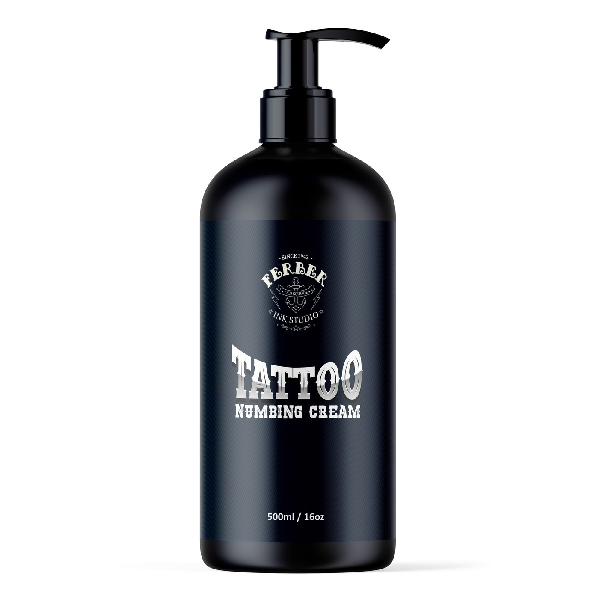
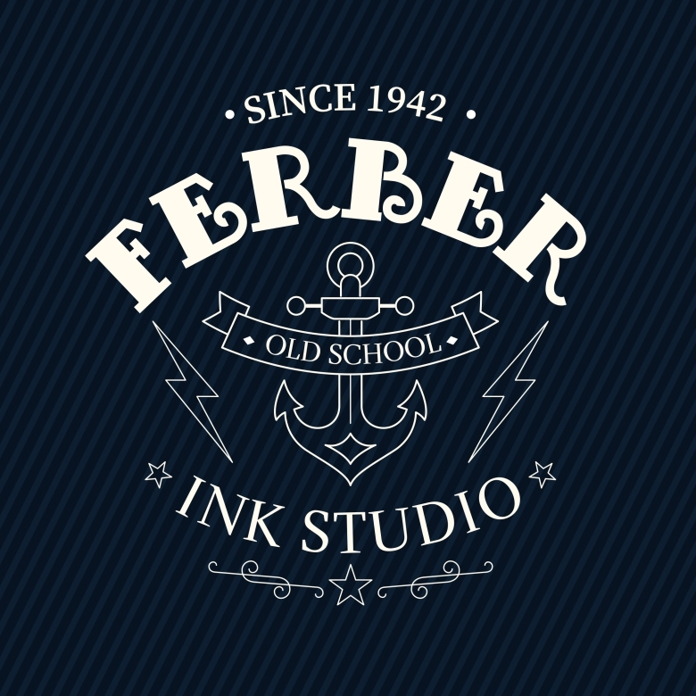
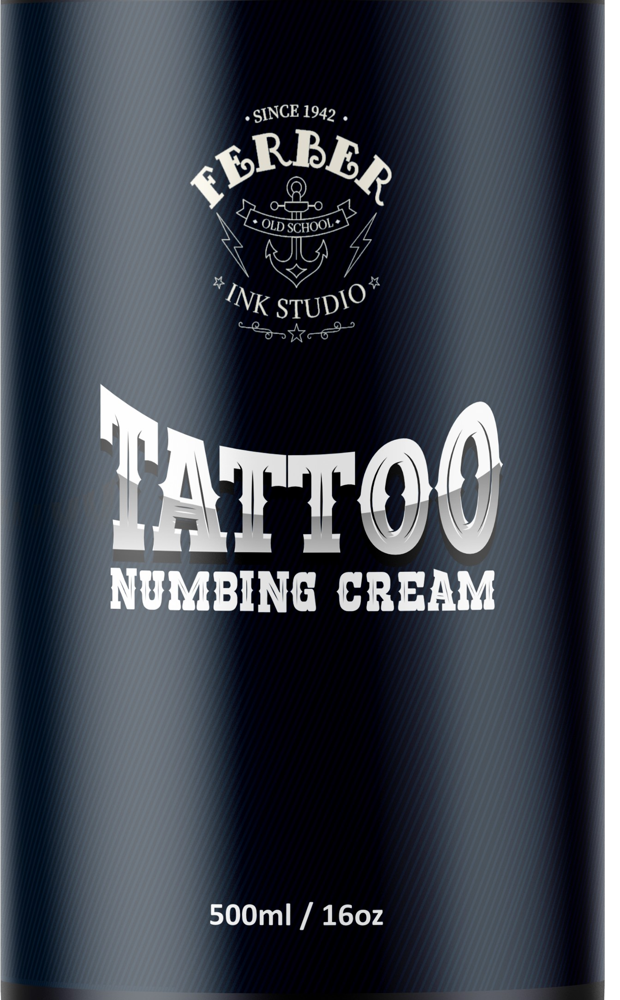
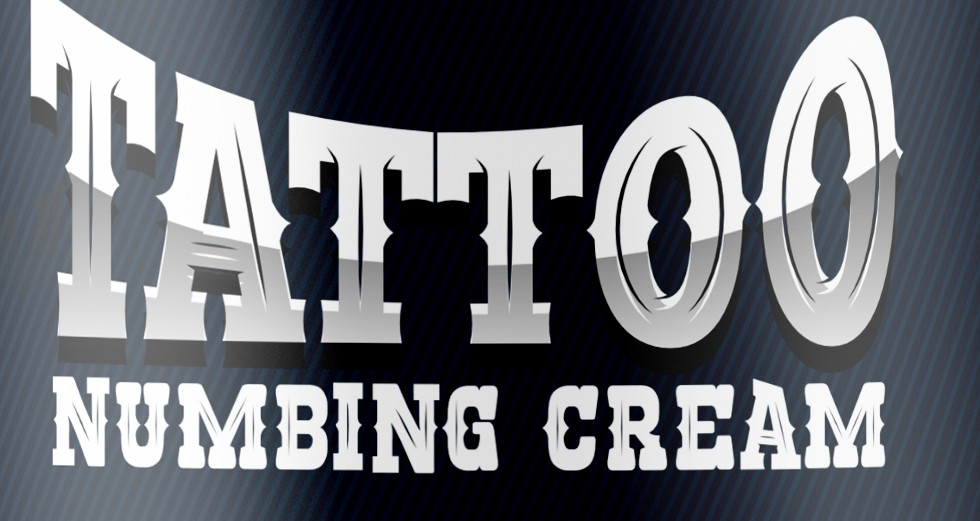
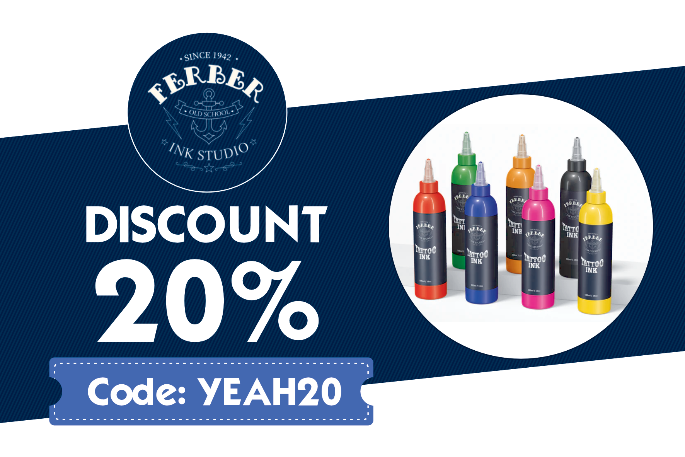

Fabriquées en interne
La marque fabrique elle-même ses encres, selon les nouvelles normes européennes REACH.
Logo et packaging d'une marque d'encres à tatouage, fabriquées en interne et transparentes sur leurs ingrédients.

Des encres fabriquées par nous, selon les normes européennes REACH.
Ferber Ink Studio est une marque d'encre à tatouage. Les encres sont fabriquées en interne, et tous les pigments sont des pigments autorisés par la norme REACH.
Donner confiance à des tatoueurs avant même qu'ils ouvrent le flacon.
La marque s'engage à fournir la meilleure qualité d'encre possible et à être transparente sur ses ingrédients. Le design devait le dire sans mots : un logo ancré dans la culture du tatouage, et un packaging sobre, lisible et premium.
La marque fabrique elle-même ses encres, selon les nouvelles normes européennes REACH.
De l'eau, de la glycérine végétale, du propylène glycol biosourcé et des pigments autorisés.
Les nouvelles normes ont banni plusieurs pigments contenant des métaux.
Conséquence : certaines couleurs coûtent plus cher à fabriquer, notamment :

Des encres fabriquées par nous, selon les normes européennes REACH.
Ferber Ink Studio est une marque d'encre à tatouage. Les encres sont fabriquées en interne, et tous les pigments sont des pigments autorisés par la norme REACH.
Parler la langue des tatoueurs : le old school.
Pour une marque de pigments, la confiance passe par un univers que les tatoueurs reconnaissent tout de suite. Le logo reprend les codes du tatouage traditionnel : un nom en arc, une bannière, une ancre, des éclairs, et une signature « Ink Studio ». La mention « Since 1942 » ancre la marque dans une histoire.

« FERBER » en lettres de bois façon western : large, affirmé, immédiatement lisible.
Un élément classique des flashs de tatouage, qui annonce le style de la maison.
L'ancre, tatouage de marin historique, et l'énergie de la machine à tatouer.
Une écriture plus fine, avec étoiles et filet décoratif, pour équilibrer la lourdeur du nom.


Une hiérarchie en trois temps.
Le logo en haut, qui signe. « TATTOO » en lettres de bois à effet chrome argenté, qui accroche l'œil. « NUMBING CREAM » en blanc, plus simple, qui précise le produit. La contenance, 500 ml / 16 oz, reste discrète en bas. Le tout sur un fond bleu nuit rayé, avec un flacon pompe noir mat.
Réseaux sociaux, carte de visite, pastille autocollante et bannière. Contenus fictifs de démonstration.

ferber.inkstudio
Vous pouvez consulter d'autres projets sur Behance ↗
Parlons de votre logo, de votre packaging ou de votre identité.